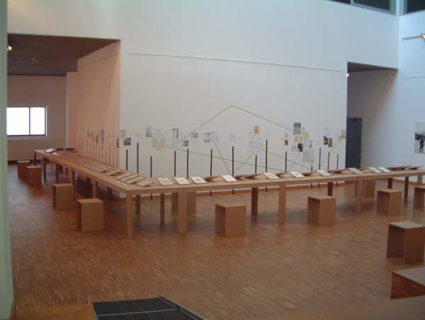

"Georges Despaux", 2006.
Concentratiekamp Buchenwald 1944-1945
Portrettekeningen en scènes
9 May - 11 June 2006
tentoonstellingsruimte Tweebronnen
Leuven, Belgium.

On The Im/possibility of a Biography - Curatorial Notes
By Naomi Tereza Salmon
"A person is nothing but the form of his Childhood's landscape."
(Shaul Tchernychowski, Jewish Poet)
My first encounter with Georges Despaux's work was at the new permanent exhibition of the Art Museum in the Buchenwald Memorial in Weimar, Germany, which opened in 1998, complementary to the drawings of José Fosty and Boris Taslitzki. The second time was while working on the concept for the "Leben - Terror - Geist" exhibition about intellectuals from the concentration camp, an Installation I curated for the Culture City of Europe 1999 events in Weimar. Later it was shown at the Goethe Museum in Weimar and then cooperating with "Culture en democratie" in Brussels, to set the exhibition in Mechelen, Belgium in 2003.
The idea behind the "Leben - Terror - Geist" exhibition was to research and show the lives and work, as well as ideas and thoughts of those who went through the extreme experience of being detained in a concentration camp. Compared to other, (altogether 73 Biographies were chosen for the Exhibition) quite famous in-mates such as George Semprun, or Eli Wiesel, there is very little known about the biography of Georges Despaux, about his life altogether. We can only look at his drawings and try to learn more about him through his own creation, his way to capture what he saw, sketches of the camp in-mates, friends, situations, meticulously exact drawings of barracks, and a small amount of caricatures and animal studies as well as some Landscapes drawings and wood carvings from the time after the war. Why show the life and work of such a person, of which only a handful of childhood photos exist, who himself, according to hearsay, eliminated a lot of his own work? And how to expose his work, which is so valuable in the search for the testimony of a sublime individual experience, without over-exposing the person himself, invading his privacy beyond his own wish? Without any chance to certify our assumptions, suppositions, suspicions or even rumours? How to deal with the fate of a man of whose reason for being arrested we cannot even be sure about?
Following In the years after the "Leben - Terror - Geist" exhibition, some of the biographies, such as those of the artists Josef Szajna or Boris Lurie, were expanded and on the occasion of 60 years of Liberation on May 8th, 2006 the exhibition space at the Tweenbronnen in Leuven (Built by Henry van der Velde) was chosen to show the fragmented evidence of the life and work of George Despaux.
Georges Despaux was born on October 3rd in Salies de Béarn, and died on December 19th 1969 in the same place, his place of birth. Quite a remarkable thing, concerning the many places he was forced to go to, as well as freely stayed at. It seems like he never found his own place, always depending on friends and reliable family members. A Video work tries to follow him to the places in which we know he has been to or made drawings of, tracing his perspective, his possible exact angle of the view, the precise location.
Exposing the research process to the public eye, exchanging the usual scheme of Pictures on the wall Vs. Documents on tables: its the Drawings which are put on the tables and the state of research, possible connections between places, persons and stories which is placed on the walls, thus giving the visitor the possibility to see the rough seam side of the story, and to build his own portrait of the man, a rhizomatic mind map of a life we couldn't and maybe even wouldn't want to conclude or can be axiomatic, or even certain about, yet a life worth exposing, because of these facts exactly, thus not trying to salve the puzzle of the man he was, but rather through looking at the same views to maybe perceive something about the shape of a person, who went through an extreme experience and came back to draw his own childhood landscapes.

Close Window
All content copyright 2006 Naomi Tereza Salmon - all rights reserved